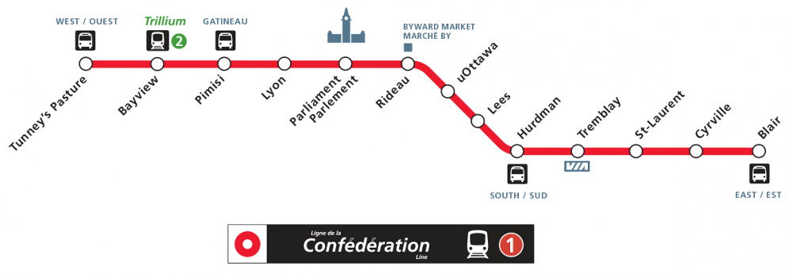

The Ottawa LRT is a rapid transit system, replacing the city's old Transitway. It is 12.5km long with 13 stations, from Tunney's Pasture to Blair, operated using Alstom Citadis Spirit trains. It has one line, Line 1, and is also called the Confederation Line (Ligne de la Confederation in French). LRT stage two will bring it to Moodie and Algonquin in the west and Trim in the east while adding a new line, Line 3. Stage two will add 27 km of rail and 16 new stations, bringing the system to a length of 39.5km with 29 stations. The system also features automated doors opening and doors closing announcements, with a chime and the phrase being said in English and French.
An example of the door chime on the Ottawa LRT: (Audio courtesy of Driving Ottawa on Youtube)